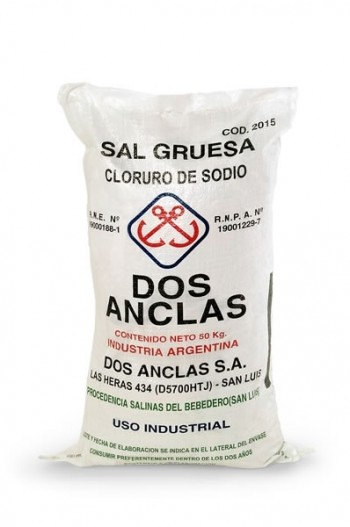

CODIBA
Distribuidor- Exportador
Representante oficial de Dos Anclas
conocé nuestros productos
keyboard_double_arrow_down
SAL
AZÚCAR
FÉCULA
SHORTON
Tenemos la sal que necesitás
Sales Comunes
Es la sal a granel que luego de un proceso de tamizado en el que se clasifican por su granulometría, se envasan según sus destinos en diferentes presentaciones. Se utiliza normalmente en: – Curtiembres, por su efecto de conservante ya que desplaza la humedad y su efecto de inhibición microbiana que protege las pieles y cueros. – Calderas, como agente desincrustante y para el ablandamiento de aguas denominadas “duras” – Deshielo de caminos, en zonas de bajas temperaturas y de nevadas. Este uso es estacional en determinadas épocas del año y sus volúmenes varían de acuerdo a las condiciones climáticas.
Sales Comunes
Es la sal a granel que luego de un proceso de tamizado en el que se clasifican por su granulometría, se envasan según sus destinos en diferentes presentaciones. Se utiliza normalmente en: – Curtiembres, por su efecto de conservante ya que desplaza la humedad y su efecto de inhibición microbiana que protege las pieles y cueros. – Calderas, como agente desincrustante y para el ablandamiento de aguas denominadas “duras” – Deshielo de caminos, en zonas de bajas temperaturas y de nevadas. Este uso es estacional en determinadas épocas del año y sus volúmenes varían de acuerdo a las condiciones climáticas.
Sales Comunes
Es la sal a granel que luego de un proceso de tamizado en el que se clasifican por su granulometría, se envasan según sus destinos en diferentes presentaciones. Se utiliza normalmente en: – Curtiembres, por su efecto de conservante ya que desplaza la humedad y su efecto de inhibición microbiana que protege las pieles y cueros. – Calderas, como agente desincrustante y para el ablandamiento de aguas denominadas “duras” – Deshielo de caminos, en zonas de bajas temperaturas y de nevadas. Este uso es estacional en determinadas épocas del año y sus volúmenes varían de acuerdo a las condiciones climáticas.